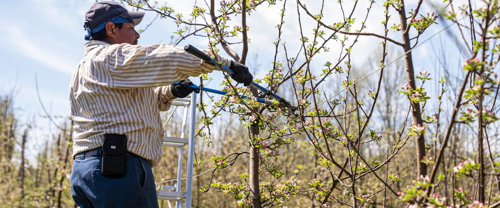
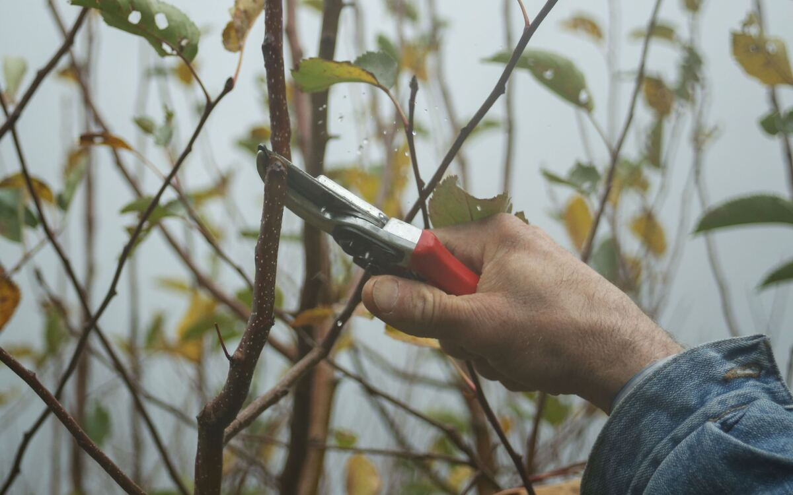

Plant guides · Oregon · Washington · Idaho
Winter Pruning for Apple and Pear Trees
Late winter is the time to prune apples and pears. Which cuts to make, how much to take off, and why cherries, plums and peaches wait for a different season.
Apples and pears are pruned while they're dormant, after the leaves fall and before the buds start to swell. A bare tree is easy to read: you can see every branch, where it's crowded and where it's heading. A little pruning each winter keeps a tree a size you can pick from, lets light and air into the middle, and helps the fruit ripen and stay healthy through our damp springs.
When to prune
Late winter is best, roughly February to early March. Pruning in fall or early winter isn't harmful in mild west-side gardens, but cuts made just before a hard freeze can be damaged by the cold, so most growers wait until the worst of winter has passed. East of the Cascades and in the high desert, wait until the severe cold is over, then finish before the buds open.
Pick a dry day if you can. Wet weather spreads some diseases from cut to cut, and you'll be climbing around on slippery bark.
Tools
- Bypass hand pruners (scissor-style, not anvil) for twigs up to about a half inch.
- Loppers for branches up to about an inch and a half.
- A folding pruning saw for anything bigger.
Sharp blades make clean cuts that seal faster. Wipe them with rubbing alcohol between trees, and between cuts if you're removing diseased wood.
What to remove, in order
- Dead, broken and diseased wood. Cut back to healthy wood. On west-side apples, look for sunken, cracked cankers on young branches; on pears east of the mountains, look for blackened, "scorched" shoot tips from fire blight, and cut at least 8 to 12 inches below any visible damage.
- Suckers and water sprouts. Suckers come up from the roots or the base of the trunk. Water sprouts are the straight, whippy shoots that shoot up vertically from branches. Both shade the tree and rarely fruit well.
- Crossing and rubbing branches. Where two branches rub, keep the better-placed one.
- Branches growing into the center or straight down. The goal is an open tree where light reaches the inner fruit.
- Height control, last. If the tree is getting too tall, cut a tall upright limb back to a side branch that's heading outward.

Two kinds of cuts
Thinning cuts remove a whole branch back to where it joins a larger one. They open up the tree without causing a flush of new growth, and they should make up most of your pruning. Cut just outside the slightly swollen ring at the base of the branch, called the branch collar. Don't cut flush with the trunk, and don't leave a long stub. Wound paint isn't needed; the tree seals the cut itself.
Heading cuts shorten a branch partway along, just above a bud. They make the tree push several new shoots below the cut, which is useful on a young tree you're shaping but turns into a thicket on a mature one. Use them sparingly.
For any branch thicker than your wrist, use three cuts so the bark doesn't tear: an undercut a foot out from the trunk, a top cut just beyond it to drop the weight, then the final cut at the collar.
How much to take off
Take no more than about a quarter of the live wood in one winter. Heavy pruning doesn't shrink a tree; it triggers a forest of water sprouts the next summer and fewer flowers. An overgrown, neglected tree is best brought back over three winters, a third of the work each year.
Look for fruiting spurs before you cut. On apples and pears, most fruit grows on short, stubby, knobbly twigs an inch or two long, often on wood that's two years or older. Leave them. Plump, fuzzy buds at the tips of the spurs are flower buds; slim, pointed buds will make leaves.
Young trees
For the first three or four years, pruning is mostly about shape. Most apples and pears are trained to a central leader: one main upright trunk with three or four well-spaced scaffold branches coming off it in a loose spiral, the lowest at about knee to waist height. Choose branches that leave the trunk at a wide angle, since narrow, V-shaped crotches split under fruit later. Our guide to planting bare-root fruit trees covers the first cut at planting.
Why cherries, plums and peaches wait
Don't take the saw to stone fruit in winter. In the Northwest, cherries and plums are prone to bacterial canker and silver leaf, diseases that get into fresh cuts during cool, wet weather. Prune cherries and plums in summer, during a dry spell, usually right after harvest. Peaches are usually pruned in early spring, around bloom, once the risk of a hard freeze is low.
See the apple and pear guides for varieties that hold up to Northwest diseases.